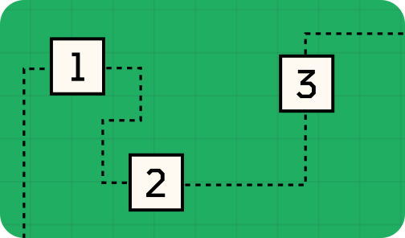
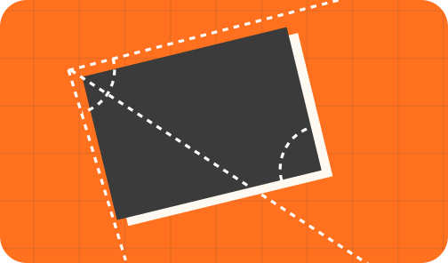
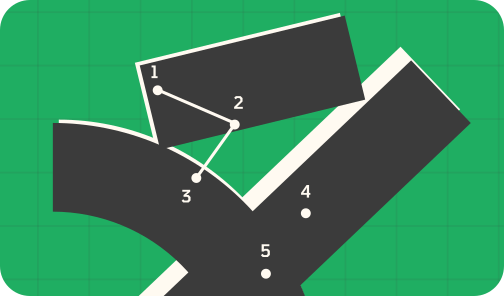
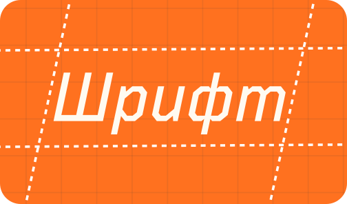

Здесь есть все, что нужно знать о книгах
Начать чтение❶
Вся необходимая теория
8 глав, которые охватывают все необходимые темы: от макета книги до печати. Этот блок придаст уверенности в решениях, и сформирует прочную базу для дальнейшей работы над собственной книгой
01 Введение
Как будет построено твое обучение
02 Ориентиры
Ты узнаешь о двух подходах к дизайну книг и получишь сводку правил по типографике и верстке

03 План работы
Разберем реальный кейс и познакомимся с одним из способов эффективно выстроить работу

04 Анатомия книги
Узнаем, как книга печатается и собирается, и как это влияет на наш дизайн

05 Разделы книги
Разберем все типичные развороты в книгах и определимся, какие из них нужны именно тебе

06 Элементы разворота
Как много разных блоков текста обычно используется в одной книге, какие кроме них есть объекты на развороте – с разбором типичного оформления каждого

07 Композиция
Советы по сильной композиции, способы выстроить иерархию, а также немного про все виды сеток

08 Шрифт
Объемная глава, где мы затронем как теорию (разберемся с терминологией и классификацией), так и практику: научимся выбирать шрифты и сочетать их

❷
Комментарии по работе с InDesign
Мы на личном опыте знаем, как сложно сопоставить советы из теории с практикой. Поэтому все главы в практическом блоке сопровождены советами по работе в программе InDesign
❸
Практика: создание книги по шагам
Если ты уверен в базе или у тебя нет времени на чтение теории, в этом блоке ты пройдешь все этапы создания книги, начиная с выбора дизайна, заканчивая предпечатной подготовкой